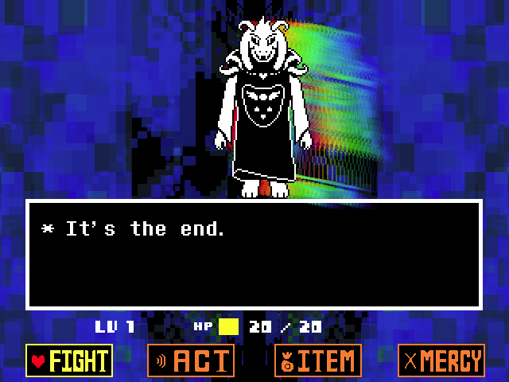
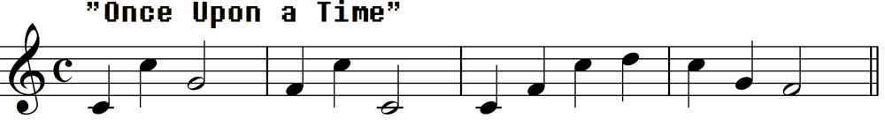
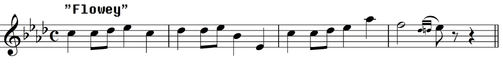
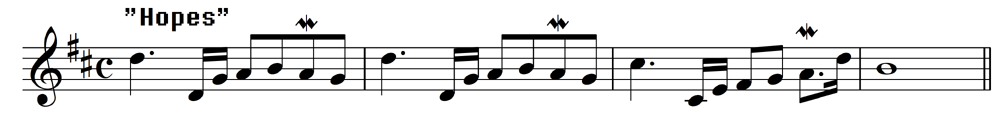

"HOPE AND DREAMS"
SPOILERS FOR THE FINAL BOSS FIGHT FOR THE Pacifist Route
This is the track that plays when you fight the first phase of the final boss of the Pacifist Route in Undertale. It is the 87th track and has two BPM, 180 BPM in the game files, while in the original soundtrack it is 170.667 BPM. The keys it's in are B-flat major and B major with a time signature of 4/4. An interesting fact is that this track is reference twice in Deltarune, in the Legend of Delta Rune and in chapter 1 soundtrack "Field of Hopes and Dreams." While the track "Field of Hopes and Dreams" itself doesn't contain a leitmotif of HOPE AND DREAM it does have a similar style or format of it.
This track contains 3 leitmotifs. Which are: Once Upon a Time, Your Best Friend, and Dreams.

Once Upon a Time leitmotifs

6 of the 17 tracks that have this leitmotif are:
- "Once Upon a Time" (All parts):
- "Home" (0:36-1:44, part 1 and 2):
- "Hopes and Dreams" (0:00-1:29 & 1:52-2:14, part 1 and 3):
- "Final Power" (Hopes and Dreams reversed, part 3):
- "SAVE the World" (At 0:00-0:14 & 0:35-1:46, part 1 and 3):
- "Undertale" (At 0:37-4:41 & 5:20-5:58, part 1 & 2):
Your Best Friend leitmotifs

All tracks that have this leitmotif are:
- "Your Best Friend":
- "Your Best Nightmare" (At 0:54-1:26, 2:00-2:27, & 3:00-3:27):
- "Finale" (0:00-0:40 & 0:5-1:52):
- "Hopes and Dreams" (At 1:18-1:52):
- "SAVE the World" (At 0:05-0:08, 0:15-0:18, 0:25-0:28, 0:36-0:39 & 1:35-1:46):
- "Last Goodbye" (0:29-0:32 & 0:39-0:42):
- "mus_toomuch": Link
Dreams leitmotifs
All tracks that have this leitmotif are:

- "Snowdin Town" (At 0:56-1:16):
- "Shop" (At 0:25-0:50):
- Dating Start!" (At 0:16-0:35 & 0:54-1:31):
- "Dating Fight!" (At 0:13-0:35):
- "Confession":
- "Hopes and Dreams" (At 2:15-3:01):
- "Reunited" (At 3:56-4:25):
- "Bring It In, Guys!" (At 1:16-1:29):
Reference
- “Hopes and Dreams.” Undertale Wiki, undertale.fandom.com/wiki/Hopes_and_Dreams. Accessed 14 Apr. 2026.
- “Leitmotifs.” Undertale Wiki, undertale.fandom.com/wiki/Leitmotifs#Dreams. Accessed 14 Apr. 2026.
- “Leitmotifs.” Undertale Wiki, undertale.fandom.com/wiki/Leitmotifs#Once_Upon_a_Time. Accessed 14 Apr. 2026.
- “Leitmotifs.” Undertale Wiki, undertale.fandom.com/wiki/Leitmotifs#Your_Best_Friend. Accessed 14 Apr. 2026.